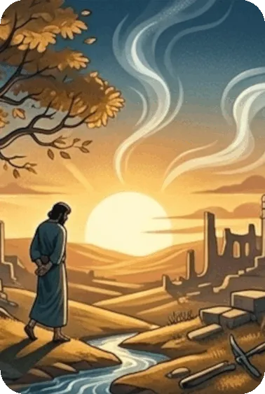
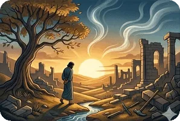

Two phrases are repeated often in Ecclesiastes. The word translated as “vanity” in the KJV, and “meaningless” in the NIV appears often, and is used to emphasize the temporary nature of worldly things. In the end, even the most impressive human achievements will be left behind. The phrase “under the sun” occurs 28 times, and refers to the mortal world. When the Preacher refers to “all things under the sun,” he is talking about earthly, temporary, human things.
The first seven chapters of the book of Ecclesiastes describe all of the worldly things “under the sun” that the Preacher tries to find fulfillment in. He tries scientific discovery (1 : 10 – 11), wisdom and philosophy (1 : 13 – 18), mirth (2 : 1), alcohol (2 : 3), architecture (2 : 4), property (2 : 7 – 8), and luxury (2 : 8). The Preacher turned his mind towards different philosophies to find meaning, such as materialism (2 : 19 – 20), and even moral codes (including chapters 8 – 9). He found that everything was meaningless, a temporary diversion that, without God, had no purpose or longevity.
Chapters 8 – 12 of Ecclesiastes describe the Preacher’s suggestions and comments on how a life should be lived. He comes to the conclusion that without God, there is no truth or meaning to life. He has seen many evils and realized that even the best of man’s achievements are worth nothing in the long run. So he advises the reader to acknowledge God from youth (12 : 1) and to follow His will (12 : 13 – 14).
Summary of the Book of Ecclesiastes from GotQuestions.org — is a popular Christian website and "parachurch" ministry that provides answers to a vast array of questions about the Bible, theology, and spiritual life.
Do you have a question? Submit your Bible Questions to GotQuestions.org No need to sign up, just use your email to receive notifications from any answers. Also browse their website for many questions that may answer your questions.
For personal questions, always pray first to God and seek answers through deep prayers. That may answer deep questions in your heart, and mind, as only God, Holy Spirit and Jesus can see through and through on your feelings, thoughts and situation, better than any man can.